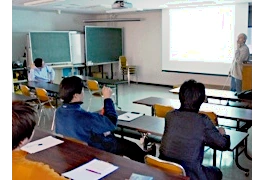

Group Seminar
In this seminar, we give presentations about our own research. Newcomers to our group talk about their BSc research or previous experience. Sometimes, guest researchers or OB/OG give talks as well.
Held irregularly in the ILTS auditorium, lecture room or conference room.
| Date | Presenter | Title |
| 3/6 11:00~ |
Evan Gowan | The Global Archive of Paleo Sea Level Indicators and Proxies (GAPSLIP) database and its application to assess the history of past ice sheets |
| 12/20 10:00~ |
Lauren Miller | Geologic records of ice sheets past and present |
| Jason Amundson | How do tidewater glaciers respond to climate change? |
|
| 12/13 10:00~ |
Soratakato Yamada | Drone survey on Qaanaaq Glacier, northwestern Greenland, for studying surface elevation change and supraglacial stream development |
| Jia-Yan (Arlec) Chang | Surface elevation change on Taku Glacier in southeast Alaska from 2014 to 2021 |
|
| 12/6 10:00~ |
Hiroto Sakata | Spatiotemporal reconstruction of accumulation rate in the southeast dome of Greenland ice sheet using ground penetrating radar |
| Shun Shinohara | Analysis of fine particles in the southeast dome ice core of Greenland |
|
| Ryo Kusaka | Life in North Greenland 50 years ago -Introduction to the Ikuo Oshima archive- |
|
| 11/29 10:00~ |
Takako Toyoyama | Ice Core Modeling |
| Kaoru Kawakami | Melt features in ice sheet |
|
| Ralf Greve | Reduced mass loss from the Greenland ice sheet under stratospheric aerosol injection |
|
| 11/22 10:00~ |
Takuro Imazu | Fluctuations of Qaanaaq Glacier in northwestern Greenland - Field observations and quantifying long-term fluctuations by numerical model |
| Shinta Ukai | Surface topographic survey using UAV at Qaanaaq Glacier in northwestern Greenland |
|
| Ken Sato | Validation of ice thickness estimation method using GPR data at Qaanaaq Glacier in northwest Greenland |
|
| 11/8 10:00~ |
Yoshinori Iizuka | Sublimation-SEM analysis of frost flowers on sea ice in Northwest Greenland |
| Yefan Wang | Ice discharge from the marine-terminating outlet glaciers along the coast of Prudhoe land, northwestern Greenland |
|
| Mai Matsumoto | Measurement of dielectric anisotropy in SE-Dome ice cores |
|
| 6/20 10:00~ |
Shuntaro Hata | Calving front measurement by LiDAR |
| Shin Sugiyama | Multibeam sonar survey of underwater ice at the front of Glaciar Grey in Patagonia |
|
| 6/13 10:00~ |
Tom Dangleterre | Influence of basal input data on spin-up simulations of the Antarctic ice sheet |
| Shinta Ukai | Drone survey of Qaanaaq Glacier, northwestern Greenland, for precise DEM construction and for mapping supraglacial streams |
|
| 6/6 10:00~ |
Takuro Imazu | Changes in the ice flow regime of Qaanaaq Glacier, Northwestern Greenland |
| Ken Kondo | Subglacial measurements at Langhovde Glacier, East Antarctica |
|
| Ken Sato | Ground penetrating radar survey on Qaanaaq Glacier in Northwestern Greenland |
|
| 5/9 10:00~ |
Hiroto Sakata | Development of the method of fundamental solutions for anti-plane wave problems in semi-infinite domain |
| Junya Shimizu | Numerical Simulation of Sea Surface Warming in the East China Sea |
|
| Shun Shinohara | Analysis of metal composition in Greenland SEDome ice core |
|
| 4/27 10:00~ |
Takako Toyoyama | The effect of initial pressure to firm compaction and survey and remote sensing for land cover |
| Nonoka Mineshige | Identified spring distribution along the river by Infrared Thermal Image | |
| Soratakato Yamada | Redox Behavior of Dispirofluorene-acenaphthene Derivatives with a Long C-C Single Bond |
|
| Jia-Yan Chang | Study on Glacial Landforms in Yabu Creek area, Southern Japanese Alps, utilising high-resolution DEMs and SfM Technology |
Reading Circle

For studying basics of glacier physics, we hold this reading circle.
Textbook is the most popular one about glacier physics, The Physics of Glaciers (4th. ed.) by Cuffey & Paterson.
Presenter read each part, explain to participants.
All participants join discussion, deepen their understandings.
§1. Introduction
§2. Transformation of Snow to Ice
§4. Mass Balance Processes
§15. Ice Core Studies
§8. The flow of Ice Masses
Journal Seminar
Graduate students in the course of Cryosphere introduce recent paper related to their own research theme.
MSc students: twice a year
PhD students: once a year
#Irregularly Friday,
@Lecture room, ILTS.